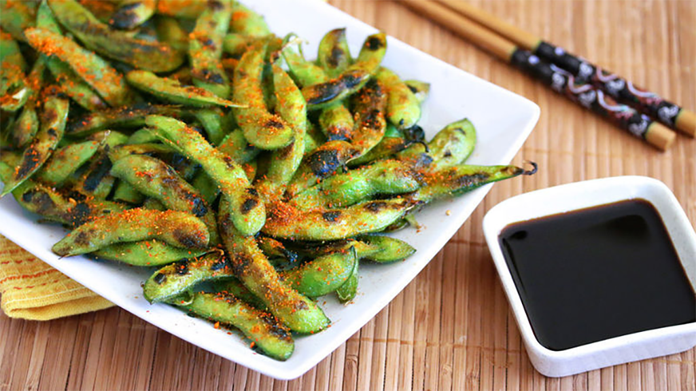

EDAMAME GRELHADO
JAPÃO - ENTRADA

Crocante por fora e macio por dentro, o edamame ou vagem-japonesa é um prato rápido e versátil
Edamame são grãos de soja jovens, ainda verdes em suas vagens. É colhido cedo, ao contrário da soja madura que é seca e firme, usada para fazer produtos como tofu e leite de soja. O edamame grelhado é consumido diretamente com a casca. No Japão, os grãos descascados de edamame são vendidos em lojas de conveniência e podem ser encontrados no corredor dos congelados nos supermercados asiáticos. Os grãos sem a casca são comumente adicionados em saladas e refogados e também podem ser a base de alguns molhos.
INGREDIENTES
- 250g de edamame congelado;
- 1 colher de sopa de azeite de oliva extra-virgem;
- 1 colher de sopa de óleo de gergelim tostado;
- sal a gosto;
- pimenta chili em flocos a gosto;
- tempero nanami togarashi a gosto
MODO DE PREPARO
- Descongele o edamame e depois espalhe-os em uma folha de papel alumínio. Espalhe o azeite de oliva e o óleo de gergelim tostado por cima, um pouco de sal e mexa tudo até homogeneizar.
- Pré-aqueça o forno em temperatura média-alta e coloque a folha de papel alumínio com o edamame na grelha do forno. Deixe grelhando por aproximadamente 5 minutos ou até dourar. Salpique o chili em flocos e um pouco de tempero nanami togarashi.
- Transfira o edamame grelhado para uma travessa ou bowl.
DICAS
- Sirva o edamame grelhado logo após retirá-lo do forno, para preservar a textura do vegetal.